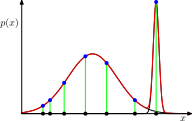
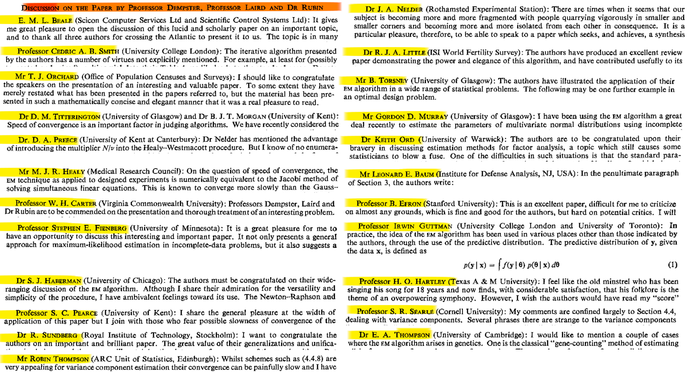
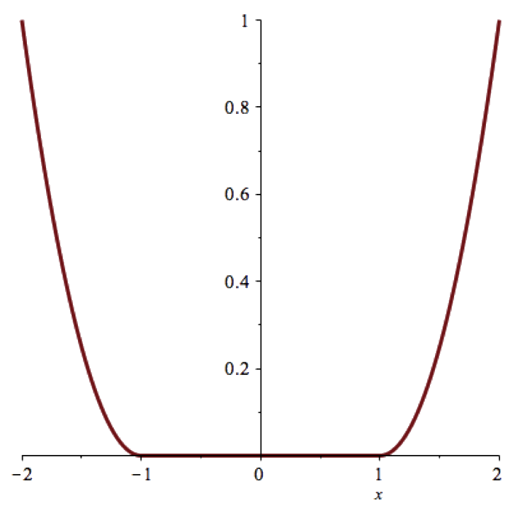
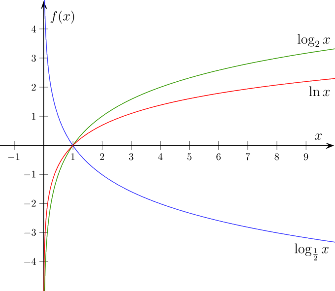
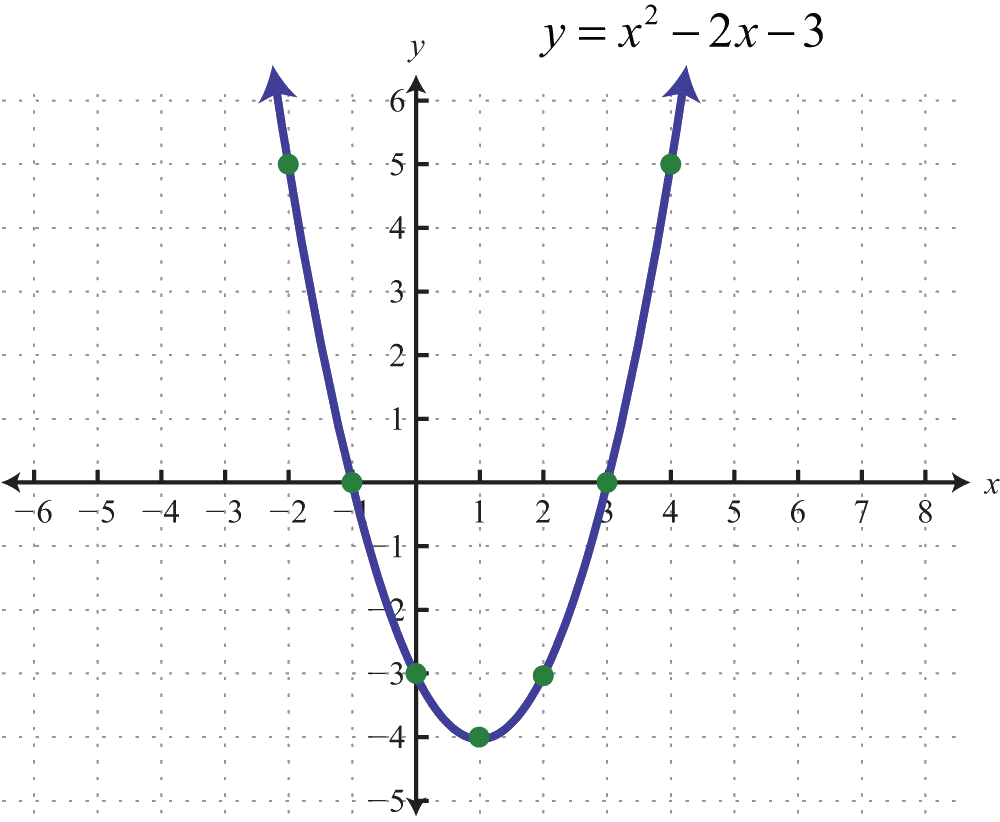
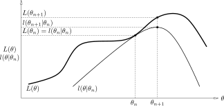
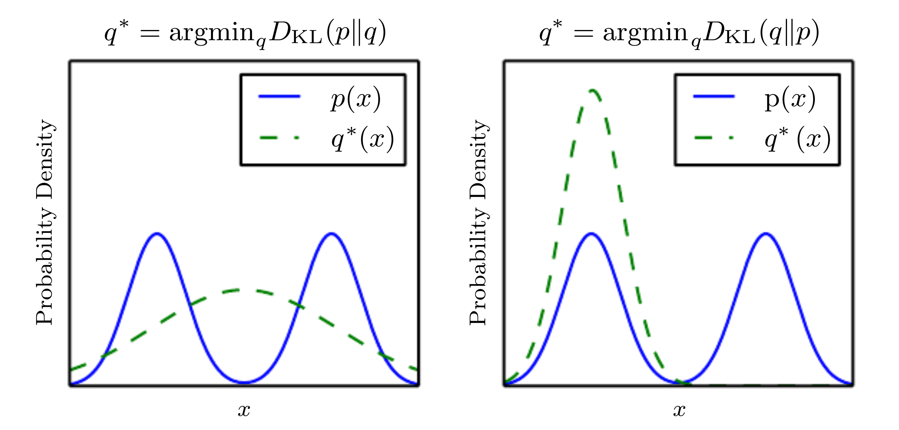

CS8850
Advanced Machine Learning

| # | date | topic | description |
|---|---|---|---|
| 1 | 24-Aug-2026 | Introduction | |
| 2 | 26-Aug-2026 | Foundations of learning | Drop/Add |
| 3 | 31-Aug-2026 | PAC learnability | HW1 |
| 4 | 02-Sep-2026 | Linear learning models | |
| 5 | 07-Sep-2026 | Labor Day Holiday | Holiday |
| 6 | 09-Sep-2026 | Principal Component Analysis | Project ideas |
| 7 | 14-Sep-2026 | Curse of Dimensionality | HW2, HW1 due |
| 8 | 16-Sep-2026 | Bayesian Decision Theory | |
| 9 | 21-Sep-2026 | Parameter estimation: MLE | |
| 10 | 23-Sep-2026 | Parameter estimation: MAP & NB | finalize teams |
| 11 | 28-Sep-2026 | Logistic Regression | HW3, HW2 due |
| 12 | 30-Sep-2026 | Kernel Density Estimation | |
| 13 | 05-Oct-2026 | Support Vector Machines | |
| 14 | 07-Oct-2026 | Matrix Factorization | |
| 15 | 12-Oct-2026 | * Midterm | Exam, HW3 due |
| 16 | 14-Oct-2026 | k-means clustering | |
| 17 | 19-Oct-2026 | Invited: Intro to Causal Learning I |
| # | date | topic | description |
|---|---|---|---|
| 18 | 21-Oct-2026 | Invited: Intro to Causal Learning II | |
| 19 | 26-Oct-2026 | * Mid-point projects checkpoint | HW4, P |
| 20 | 28-Oct-2026 | Expectation Maximization | |
| 21 | 02-Nov-2026 | Stochastic Gradient Descent | |
| 22 | 04-Nov-2026 | Automatic Differentiation | |
| 23 | 09-Nov-2026 | Nonlinear embedding approaches | HW5, HW4 due |
| 24 | 11-Nov-2026 | Model comparison | |
| 25 | 16-Nov-2026 | Model Calibration | |
| 26 | 18-Nov-2026 | Convolutional Neural Networks | |
| 27 | 23-Nov-2026 | Thanksgiving Break | Holiday |
| 28 | 25-Nov-2026 | Thanksgiving Break | Holiday |
| 29 | 30-Nov-2026 | Word Embedding | |
| 30 | 02-Dec-2026 | Project Final Presentations | HW5 due, P |
| 31 | 07-Dec-2026 | Presentation spillover / Exam prep | Classes End |
| 32 | 09-Dec-2026 | * Final Exam | Exam |
| 33 | 16-Dec-2026 | Project Reports | due |
| 34 | 17-Dec-2026 | Grades due 5 p.m. | PAWS |
| # | date | topic |
|---|---|---|
| 2–4 | Aug–Sep | ERM, PAC & Linear Models |
| 6–7 | 09–14 Sep | PCA & Curse of Dimensionality |
| 8 | 16-Sep-2026 | Bayesian Decision Theory |
| 9–10 | 21–23 Sep | Parameter Estimation: MLE, MAP & NB |
| 11 | 28-Sep-2026 | Logistic Regression |
| 12 | 30-Sep-2026 | Kernel Density Estimation |
| 13 | 05-Oct-2026 | Support Vector Machines |
| 14 | 07-Oct-2026 | Matrix Factorization |
| 16 | 14-Oct-2026 | k-means clustering |
| 17–18 | 19–21 Oct | Intro to Causal Learning I & II |
| 19 | 26-Oct-2026 | Mid-point projects checkpoint |
| 20 | 28-Oct-2026 | Expectation Maximization |
Likelihood: $\prob{p}{\vec{x}} = \sum_{k=1}^K \pi_k\prob{N}{\vec{x}|\vec{\mu}_k, \bm{\Sigma}_k}$
$$\begin{aligned} \mbox{for simplicity }\bm{\Sigma}_k & = \sigma^2 \bm{I}\\ \prob{p}{\vec{x}|y=k} & = \prob{N}{\vec{\mu}_k, \sigma^2 \bm{I}}\\ \prob{p}{y=k} & = \pi_k\\ \mbox{parameters: } & \vec{\mu}_1, \dots, \vec{\mu}_K, \; \sigma^2, \; \pi_1, \dots, \pi_K \end{aligned}$$
$$\ln \prob{p}{\bm{X}|\{\vec{\mu}_k\}, \{\bm{\Sigma}_k\}, \{\pi_k\}} = \sum_{n=1}^N \ln\left\{\sum_{k=1}^K \pi_k \prob{N}{\vec{x}_n|\vec{\mu}_k, \sigma_k^2\bm{I}} \right\}$$

$${\cal N}(x_i \mid \mu_k = x_i, \sigma_k^2) = \frac{1}{\sqrt{2\pi}\,\sigma_k} \to \infty \quad \text{as} \quad \sigma_k \to 0$$
recall logistic regression and softmax!
Using the good old Newton-Raphson update: $\mu_k \leftarrow \mu_k - \frac{\partial {\cal L}}{\partial \mu_k}\Big/\frac{\partial^2 {\cal L}}{\partial \mu_k^2}$
Yields the weighted average update: $$\mu_k = \frac{\sum_n \prob{P}{k|x_n,\vec{\theta}} x_n}{\sum_n \prob{P}{k|x_n,\vec{\theta}} }$$
Update
- Responsibilities $r_k^n = \prob{P}{k|\vec{x}_n,\vec{\theta}}$ are posteriors over latent cluster assignments
- Update is maximization of the likelihood holding responsibilities fixed
Both "hacky" approaches to solve a latent variable problem are instances of a rigorous general principle:
Expectation Maximization (EM): a meta-algorithm

Convex

Strictly convex

Strongly convex

Theorem:
If $f(x)$ is twice differentiable on $[a,b]$ and $f^{\prime \prime}(x) \ge 0$ on $[a,b]$ then $f(x)$ is convex on $[a,b]$.
Theorem:
$-\ln(x)$ is strictly convex on $(0, \infty)$ $\left(\text{since } \frac{d^2}{dx^2}[-\ln x] = \frac{1}{x^2} > 0\right)$
Theorem:
Let $f$ be a convex function on an interval $I$. If $x_1, x_2, \dots, x_n \in I$ with $\lambda_1, \lambda_2, \dots, \lambda_n \ge 0$ and $\sum_{i=1}^n\lambda_i=1$: $$f\left(\sum_{i=1}^n\lambda_ix_i\right) \le \sum_{i=1}^n \lambda_i f(x_i)$$
Since $-\ln(x)$ is strictly convex, $\ln(x)$ is strictly concave, which reverses the inequality: $$\ln\left(\sum_{i=1}^n\lambda_ix_i\right) \ge \sum_{i=1}^n \lambda_i \ln{(x_i)}$$In expectation notation (for $\lambda_i = q(z_i)$): $\ln \EE_{q}[X] \ge \EE_{q}[\ln X]$, with equality iff $x_1 = x_2 = \dots = x_n$.
$$\begin{aligned} {\cal L}(\vth|\vth_n) & \def \prob{L}{\vth_n} + \Delta(\vth|\vth_n)\\ \prob{L}{\vth} & \ge {\cal L}(\vth|\vth_n) \end{aligned}$$
Evaluate the surrogate lower bound at the current iterate $\vth = \vth_n$:
$${\cal L}(\vth_n|\vth_n) = \prob{L}{\vth_n} \quad \text{(The lower bound touches } \prob{L}{\vth} \text{ tangentially at } \vth_n\text{!)}$$


$D_{\text{KL}}(p \parallel q) = \int p(x) \ln \frac{p(x)}{q(x)} dx \ge 0$ (asymmetric! $D_{\text{KL}}(p\parallel q) \ne D_{\text{KL}}(q\parallel p)$)
What if the true posterior $\prob{P}{\vec{z}|\bm{X}, \vth}$ is intractable?
Restrict $q(\vec{z}) \in {\cal Q}$ to a tractable family (e.g., factorized mean-field or a neural encoder $q_{\bm{\phi}}(\vec{z}|\vec{x})$) and maximize $\text{ELBO}(q, \vth)$ directly!
For each data point $n=1,\dots,N$ and component $k=1,\dots,K$, evaluate the posterior membership probability:
$$\gamma_{nk} = \frac{\pi_k^{(t)} \prob{N}{\vec{x}_n \mid \vec{\mu}_k^{(t)}, \bm{\Sigma}_k^{(t)}}}{\sum_{j=1}^K \pi_j^{(t)} \prob{N}{\vec{x}_n \mid \vec{\mu}_j^{(t)}, \bm{\Sigma}_j^{(t)}}}$$Define effective point count assigned to cluster $k$: $$N_k \def \sum_{n=1}^N \gamma_{nk} \quad \left(\sum_{k=1}^K N_k = N\right)$$
Maximize $Q(\vth|\vth^{(t)})$ (with Lagrange multiplier $\sum_k \pi_k = 1$):